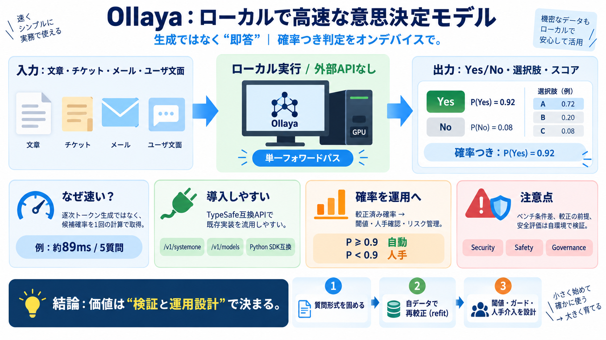

Jev (TypeSafe AI) benchmark: accuracy, calibration, price · Jevals
Setupai-sdk experimental\_evaluate ai@7.0.106 · native probabilities via Vercel AI Gateway · reasoning — · temperature —…

意思決定を、ローカルで
文章を読み、選択肢・はい/いいえ・スコアを確率つきで返す「意思決定モデル（decision model）」を、 TypeSafe互換のAPIで高速にローカル実行するためのオープンソース。 （意思決定＝判断の自動化 / 判定）
遅さが、判断を止める
判断（yes/no・選択肢・スコア）を頻繁に行う場面では、LLMの逐次トークン生成は遅くなりがちです。 さらに外部APIに送る設計は、機密データの扱いに負担が残ります。
“生成”ではなく“即答”
トークンを1つずつ作る通常LLMではなく、候補の確率（またはロジット）を直接取り出して返す設計が中心です。 これが「単一フォワードパス＝早い答え」を支えます。
TypeSafe互換で、移行を楽に
OllayaはTypeSafeのAPI互換を保ち、TypeSafeのPython SDK 0.7.1をローカルサーバへ向けて使える点が強調されています。 （既存実装を“流用しやすい”＝導入障壁が下がる）
互換性は高いとされますが、最終的にはリクエスト/レスポンス、エラーハンドリング、モデル差分で差が出得ます。
速さの“例”
代表例として winnow:e4b が挙げられ、5つの質問に対する応答が約89ms（RTX 4090、エンドツーエンド）と示されています。
ただし速度比較は条件差（ネットワーク込み/込みでない等）の影響を受け得るため、鵜呑みは注意です。
精度も“同程度”を狙う
紹介文では精度面で、ホスト型サービスのJev（TypeSafeのHosted API）に近い水準であることが示唆されています。 速度で大幅に有利でも、精度が犠牲になり切らない設計を意図しています。
ただしベンチマーク条件の完全一致は読み取りにくいので、自環境での再現が必要です。
較正済み確率が運用に効く
Ollayaはモデルに較正済みの確率を付属させ、ラベル付きデータで再較正（Modelfileでrefit）できるとされています。 確率を閾値判定やリスク管理へ直接つなぎやすいのが特徴です。
閾値設計の“型”
較正された確率があれば、「0.9以上なら自動処理、未満は人手確認」のように運用ルールへ落とせます。 逆に較正が弱いと、確率が過大/過小になり判定基準が崩れます。
人手判断と組み合わせる設計にすると、確率の“当たり外れ”も管理しやすくなります。
比較は条件で揺れる
レイテンシ比較や精度比較は、ネットワーク込み/込みでない、環境差、ベンチ手法差などで結果が変わり得ます。 “優位”を採用する前に、自環境で同条件に近い評価が必要です。
安全・セキュリティは別問題
外部に送らないのは機密性の利点ですが、安全性は別レイヤです。 ガードモデル（例：qwen3guard）や運用基準、評価計画（失敗モード分析）が必要になります。
ローカル実行は「外部送信リスクを下げる」だけで、リスクがゼロになるわけではありません。
良い点と落とし穴
Ollayaの強みは「低レイテンシ」「TypeSafe互換」「較正済み確率」「外部APIなし」で、運用に直結します。 一方で、ベンチ条件差・較正の前提・安全基準の不足に注意が必要です。
最後に：評価計画
技術方向性は合理的ですが、実運用での精度・レイテンシ・安全性は「モデル選定」と「検証（データ分割/指標/閾値/失敗モード分析）」で決まります。 （Ollayaの価値を出す鍵＝再較正と運用設計）
Setupai-sdk experimental\_evaluate ai@7.0.106 · native probabilities via Vercel AI Gateway · reasoning — · temperature —…
In our September 2026 controlled benchmark across 385 Banking77 intent classifications (77 discrete intents), we evaluat…
The GGUF (General‑Purpose GPU Unified Format) is a binary container designed for fast loading with `llama.cpp` and other…
Top 10 GPU Clouds and Servers for AI in 2026: H100 to RTX 5090Compare the top 10 GPU cloud providers and bare-metal serv…
| | | | 4. | Jev vs GPT and Claude: Independent Benchmark (2026) | | | We ran TypeSafe Jev against four LLMs on 791 l…